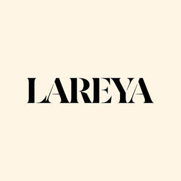

Trade Mark Journal No.2025/040 3 October 2025
UK00004250557 18 August 2025 (3,26,35,44)

- Class 3
- Hair shampoos; Hair styling lotions; Hair texturizers; Hair relaxers; Hair mascara; Hair colourants; Hair shampoo; Hair pomades; Hair lighteners; Hair conditioners; Hair serums; Hair styling gels; Hair styling waxes; Styling gels for the hair; Hair cosmetics; Hair moisturizers; Hair styling gel; Hair lotions; Dyes for the hair; Hair colorants; Hair dyes; Styling sprays for the hair; Hair conditioner; Hair mousses; Tints for the hair; Hair creams; Hair permanent treatments; Hair mousse; Hair moisturisers; Hair dye; Mousses being hair styling aids; Hair emollients; Hair gels; Hair styling preparations; Styling paste for hair; Hair balms; Hair lacquers; Hair straightening preparations; Hair lotion; Hair sprays; Hair bleaches; Hair gel; Hair styling spray; Hair oils; Shampoos for human hair; Hair conditioner bars; Cosmetic preparations for the hair and scalp; Mousses [toiletries] for use in styling the hair; Hair masks; Hair tonics; Wax treatments for the hair; Hair rinses; Hair color; Hair rinses [for cosmetic use]; Hair nourishers; Hair bleach; Hair moisturising conditioners; Hair wax; Hair protection mousse; Hair colouring; Hair spray; Hair cream; Hair powder; Baby hair conditioner; Hair oil; Hair chalks; Hair lacquer; Hair balsam; Hair balm; Colouring lotions for the hair; Hair tonic; Hair liquid; Non-medicated hair shampoos; Hair glaze; Hair glazes; Hair and body wash; Hair liquids.
- Class 26
- Hair extensions; Hair ornaments, hair rollers, hair fastening articles, and false hair; Tresses of hair; Hair (Tresses of -); Hair tresses; Hair barrettes; Hair twisters [hair accessories]; Plaits of hair; Hair elastics; Hair scrunchies; Hair tassel strings for Japanese hair styling (motoyui); Plaited hair; Hair (Plaited -); Hair curlers; Hair curl clips; Hair clips; Hair ribbons for Japanese hair styling (tegara); Hair ornaments in the nature of hair wraps; Hair tassel ornaments for Japanese hair styling (negake); Bows for the hair; Hair bows; Sticks for use in styling the hair; False hair for Japanese hair styling (kamoji); Hairpieces for Japanese hair styling (kamishin); Hairpieces for Japanese hair styling [kamishin]; Hair fasteners; Hair ribbons; Ribbons for the hair; Fibres for use as replacement hair; Synthetic hair; Hair weaves; Hair wraps; Tabodome [hair pins for fixing back-hairpieces for use in Japanese hair styling]; Hair rollers; Ornamental hair pins for Japanese hair styling (kogai); Ponytail holders and hair ribbons; Hair buckles; Hair pins; Pins for the hair; Ornaments (Hair -); Ornaments for the hair; Hair ornaments; Hair pieces; Ornamental combs for Japanese hair styling (marugushi); Hair curling pins; Hair ornaments in the form of combs; Hair decorations; Hair slides; Toupees [false hair]; Grips for the hair; Hair grips; Human hair; Hair bands; Bands for the hair; Bands (Hair -); Electric hair curlers.
- Class 35
- Retail services in relation to hair products.
- Class 44
- Hair extension services; Hair styling; Hair perming services; Hair braiding services; Hair straightening services; Shampooing of the hair; Hair styling services; Hair salon services; Hair replacement; Hair curling services; Hair dressing salon services; Hair restoration; Hair treatment; Hair dyeing services; Hair cutting; Hair weaving.
Alanna Elliott Reynolds